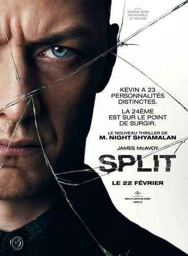
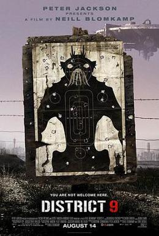

I'm a digital enthusiast, I have a technical training background and I used to work as a seller as a corporate. My motto: Stay hungry stay foolish.
Stay tuned
GattacaIn the not-too-distant future, a less-than-perfect man wants to travel to the stars. Society has categorized Vincent Freeman as less than suitable given his genetic make-up and he has become one of the underclass of humans that are only useful for menial jobs. To move ahead, he assumes the identity of Jerome Morrow, a perfect genetic specimen who is a paraplegic as a result of a car accident. With professional advice, Vincent learns to deceive DNA and urine sample testing. Just when he is finally scheduled for a space mission, his program director is killed and the police begin an investigation, jeopardizing his secret. |
|
|  |
SplitWhile the mental divisions of those with dissociative identity disorder have long fascinated and eluded science, it is believed that some can also manifest unique physical attributes for each personality, a cognitive and physiological prism within a single being. Though Kevin has evidenced 23 personalities to his trusted psychiatrist, Dr. Fletcher, there remains one still submerged who is set to materialize and dominate all the others. |
|  |
district 9District 9 is a 2009 science fiction action horror film directed by Neill Blomkamp, written by Blomkamp and Terri Tatchell, and produced by Peter Jackson and Carolynne Cunningham. It is a co-production of New Zealand, the United States, and South Africa. The film stars Sharlto Copley, Jason Cope, and David James, and was adapted from Blomkamp's 2006 short film Alive in Joburg. |